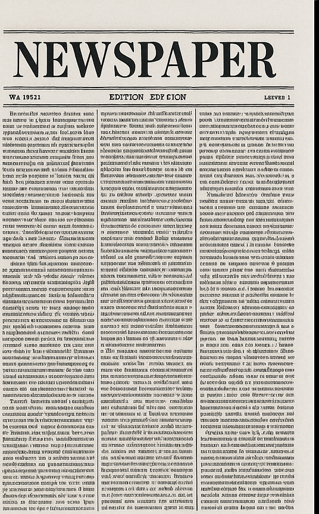
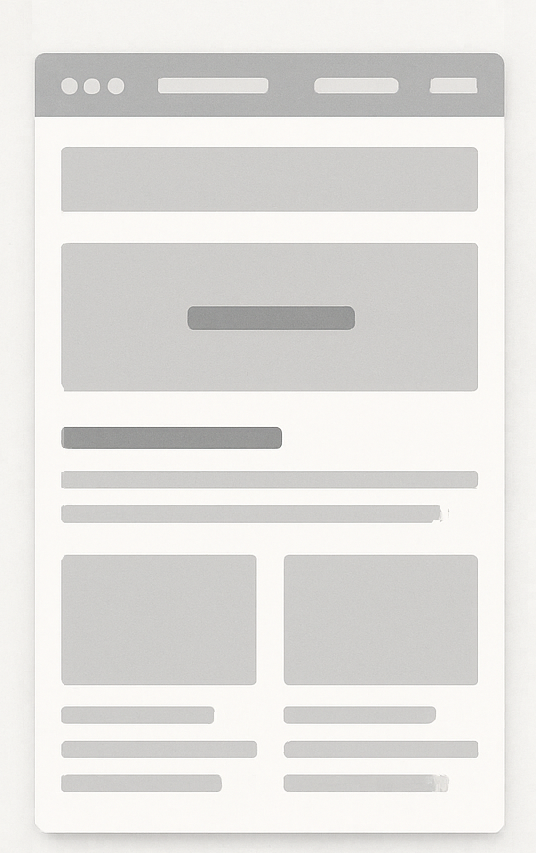

Lenguajes de marcas¶
Objetivo¶
Comprender cómo a lo largo de la historia se ha organizado el espacio en la superficie escrita en áreas de edición cada vez más definidas y sistemáticas, hasta llegar a los lenguajes de marcas actuales (HTML).
Evolución de las áreas de edición¶
| Siglo XIII – Manuscrito | Siglo XIX – Periódico | Actualidad – Página web |
|---|---|---|
 |
 |  |
| Áreas: ilustraciones, marco, bloque de texto. | Áreas: cabecera, columnas, secciones, anuncios. | Áreas: header, menú, cuerpo, aside, footer. |
| División artesanal, marcada por la decoración. | División sistematizada gracias a las rotativas. | División definida por código (HTML/CSS). |
| Cada página tiene una organización propia. | Cada ejemplar mantiene un patrón fijo. | El diseño es adaptable y escalable. |
Etiquetas HTML y etiquetas semánticas¶
Definiciones¶
-
Tag HTML (etiqueta HTML):
Es un elemento del lenguaje HTML que sirve para marcar partes del contenido de una página web (texto, imágenes, enlaces, etc.). Se escribe entre< >e indica al navegador cómo estructurar o mostrar ese contenido. -
Tag semántico (etiqueta semántica):
Es una etiqueta HTML que describe el significado de la parte de contenido que encierra (por ejemplo<header>,<article>,<footer>). No solo organiza la apariencia, sino que aporta información clara sobre la función del contenido, útil para navegadores, buscadores y accesibilidad.
Comparación de etiquetas¶
| 🟥 No semánticas | 🟩 Semánticas |
|---|---|
<div> → Contenedor genérico sin significado propio. |
<header> → Cabecera de una página o sección. |
<span> → Contenedor en línea sin significado propio. |
<nav> → Área de navegación. |
<b> → Texto en negrita (sin aportar significado). |
<main> → Contenido principal del documento. |
<i> → Texto en cursiva (sin aportar significado). |
<article> → Contenido independiente (artículo, entrada de blog, noticia). |
<section> → Sección temática del documento. |
|
<aside> → Contenido complementario (barra lateral, notas). |
|
<footer> → Pie de página o sección. |
|
<strong> → Texto con énfasis relevante en el significado. |
|
<em> → Texto enfatizado con matiz semántico. |
Esquemas semánticos de cada caso¶
1. Beato de Liébana (s. XIII)¶
<body>
<header>
<img src="beato.jpg" alt="Ilustración y decoración del manuscrito" />
</header>
<section>
<article>
<p>Texto manuscrito principal, acompañado de ilustraciones y decoraciones.</p>
</article>
</section>
</body>
2. Periódico (s. XIX)¶
<body>
<header>
<h1>Cabecera del periódico</h1>
</header>
<section>
<article>
<h2>Noticia principal</h2>
<p>Texto de la noticia distribuido en columnas.</p>
</article>
<aside>
<p>Anuncios y secciones secundarias.</p>
</aside>
</section>
<footer>
<p>Pie con datos editoriales.</p>
</footer>
</body>
3. Página web actual¶
<body>
<header>
<h1>Cabecera de la página</h1>
<nav>
<ul>
<li><a href="#">Inicio</a></li>
<li><a href="#">Secciones</a></li>
<li><a href="#">Contacto</a></li>
</ul>
</nav>
</header>
<main>
<article>
<h2>Título de contenido</h2>
<p>Texto principal de la página web.</p>
</article>
<aside>
<p>Información adicional o barra lateral.</p>
</aside>
</main>
<footer>
<p>Pie de página con enlaces legales y créditos.</p>
</footer>
</body>
!!! tip Idea clave
Las etiquetas no semánticas solo sirven como contenedores o para aplicar estilos.
Las etiquetas semánticas ayudan a comprender la función del contenido, favorecen la accesibilidad y mejoran el SEO.
!!! tip Referencias clave MSDN w3schools html w3schools semántico